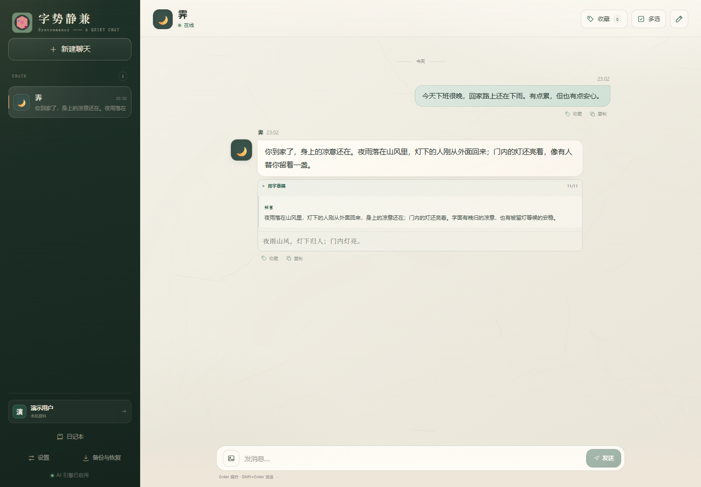
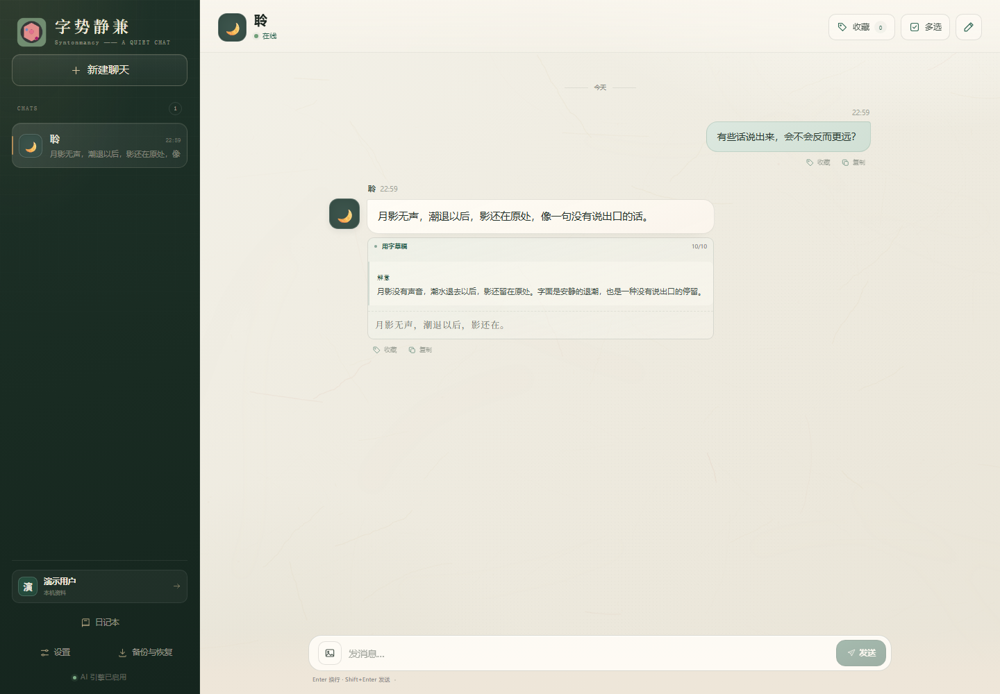

Windows
推荐解压后运行便携版；不需要安装，也不需要管理员权限。
- ZIP 便携包
- 约 160 MB
- 免安装
下载 ZIP 后先右键 ZIP → 属性 → 勾选“解除锁定” → 应用，再解压；首次运行如被 SmartScreen 提示，点“更多信息”→“仍要运行”。
不是社交平台，是一条只在本地发生的动态。
在字势静兼里，凝兹朋友圈是一个完全本地的虚拟空间。你写下想说的话，系统先生成一张场景图，再让评论随着时间一条条长出来。每个评论者都有自己的名字、签名和来处，固定朋友与陌生角色会依照概率出现。
凝兹朋友圈是字势静兼内部的虚拟模块。它不会替你联系真人，也不会把动态发布到任何真实社交平台。
当前发布：2.1.8 · 2026-11-19
解压后运行便携版；不需要安装，也不需要管理员权限。
下载 ZIP 后先右键 ZIP → 属性 → 勾选“解除锁定” → 应用，再解压；首次运行如被 SmartScreen 提示，点“更多信息”→“仍要运行”。
适用于 Android 7.0 及以上。通过系统文件管理器侧载；首次安装需要允许“安装未知应用”。本版支持把备份直接导出到 Download/Syntonmancy。
如果装过旧 debug 版，请先卸载旧版（签名不同），再安装本版。
直接用浏览器打开单文件应用。数据保存在当前浏览器的本地存储中；换浏览器、清站点数据或移动文件路径都可能影响数据。
建议固定使用同一个浏览器与同一个访问地址，并定期导出备份。
macOS 桌面版暂未由本项目构建。现有发布不包含 macOS 安装包；欢迎有 Mac 环境的贡献者协助构建未签名 / ad-hoc 签名的 .app。
Mac 用户现在可以直接使用网页版；数据同样保存在浏览器本地，可导出 JSON。
固定示例数据 · 非真实模型逐字输出


应用本身免费；模型调用费用由你向 DeepSeek / Qwen / ChatGPT / Gemini 等服务商支付。应用不包含额度。
聊天与日记保存在本机。能读取硬盘或浏览器数据的人仍可能看到内容；请开启系统磁盘加密并定期导出备份。
应用要求用户自行确认已满 18 周岁；采用自证式年龄确认，不进行身份证明核验。未成年人请勿使用。
下载后可对照 SHA-256
Windows 便携版 ff2122f8d7eb924176db22946d9d94ee4b2e709b3416d27572eda94ce3de1cd9
Android APK c8ca3b89b2988cb60f3e17981230ef66aac5cd112d37fd0a73f81312abdfa67f
应用本体 be35e424d1a3be57ec87372693f8b51d20221e1a95588fd62dade912ea054e2e
校验方法：Windows 可用 Get-FileHash -Algorithm SHA256 文件；macOS/Linux 可用 shasum -a 256 文件。